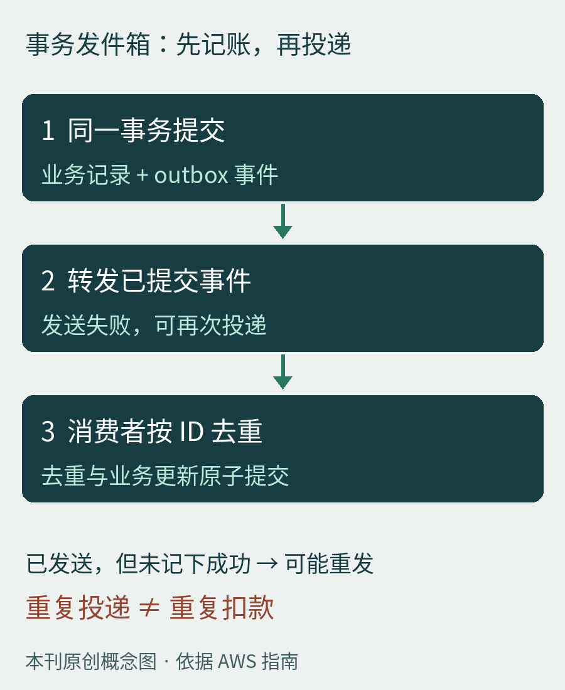

01 / AGENT · 技术分享 · 工程文章选读
把资料的位置留下，需要时再读
上下文设计的对象，是下一步决策需要的信息。
来源坐标。Anthropic 于 2025 年 9 月 29 日发布上下文工程文章，讨论如何在运行过程中整理模型可见的信息。本节选读其中的按需检索思路，不是今日模型或 API 更新；文章于本轮重新核验。
作者方法。先保留文件路径、存储的查询、网页链接等轻量引用，等任务需要时再通过工具读取内容。目录、命名和时间戳可帮助选择下一份资料。作者也提出混合方式：必要背景预先提供，其余信息运行时探索。代价是额外检索时间，以及找错方向或漏掉关键内容的可能。
编辑设计示例。排查一次导出失败，先提供目标、错误摘要和日志位置；Agent 读取相关时间段，定位请求 ID，再读对应调用链。不要每轮都复制整天日志，也不要只给一句“导出坏了”让它猜。
建议在引用旁保存版本或时间范围，在结论旁保留证据位置。下一轮读到更新后的文件时，应明确这是新状态，不能把旧判断直接套上去。
怎么验收。编辑建议用同一组真实任务比较“全部预载”与“按需读取”：观察任务是否完成、关键证据是否遗漏、总耗时和输入量。输入量下降本身不代表质量提高；漏掉一条约束，可能比多读几页更贵。这是建议的评估方法，不是已完成实验。
适用边界。适合资料量大、局部相关性强、能够可靠定位原文的任务。权限约束与必要任务指令应明确提供；引用不可访问时要报告缺证，不能用摘要冒充原文。外部资料进入上下文，也不因此获得指挥工具执行的权限。
02 / 后端与架构 · 技术分享 · 模式选读
事务提交了，通知还没发出去怎么办？
把“需要通知”也写进同一笔事务。
来源坐标。AWS Prescriptive Guidance 的 Transactional outbox 指南为滚动文档，本页未单列发布日期；本节按 2026 年 10 月 24 日（UTC+8）可见内容选读，不对应某个数据库新版本。
官方机制。数据库更新与消息发送是两次独立写入：一边成功、另一边失败，会留下不一致。发件箱模式将业务记录和待发事件写入同一个数据库事务；另一个服务只读取已提交事件，再发送给消息系统。事务回滚时，事件记录也回滚。

本刊原创架构图，依据 AWS 发件箱指南；消费者原子去重是编辑落地建议。箭头表示处理顺序，不代表端到端恰好一次或延迟保证。
最容易误解的边界。发件箱解决的是“业务与待发事件一起落库”，并未让数据库和远程消息系统变成同一个事务。转发器发出消息后、记录成功前崩溃，恢复时可能再发一次。AWS 因此提醒处理重复消息与通知顺序。
编辑落地建议。为每个业务事件分配稳定 ID；消费者把“已处理 ID”与业务变更放进自己的原子提交里。若副作用是远程扣款，仍需下游幂等接口或结果核查，单靠本地去重表无法封住所有故障窗口。
需要同一订单的顺序时，明确订单键与递增序号，并处理并行转发和迟到事件。观察待发数量、最老事件年龄与失败原因；积压没有清空之前，提交成功不等于下游已完成。
适用场景。适合订单、库存等需要在本地业务提交后发出事件的服务。它引入异步延迟、转发器维护和清理成本；跨服务的业务回滚仍需独立设计。本文不声称吞吐提升，也不把消息系统的去重等同于任意业务副作用只发生一次。
03 / 科技新闻 · 官方公告 2026-10-23
GitHub Apps 的企业级安装正式可用
更多治理自动化，可以从个人令牌迁向应用身份。
官方发布。GitHub 在 10 月 23 日公告中宣布企业级 GitHub Apps 安装正式可用，扩展企业与组织自动化可调用的 API 和权限。覆盖方向包括仓库策略与规则集、绕过请求读取、双因素认证要求、域名验证、IP 允许列表及企业管理设置。
版本与权限边界。公告称这些更新将进入 GHES 3.24；这不是说所有旧版自托管实例已具备同样能力。应用仍需在设置中选择对应权限，不能把“支持某项 API”理解成“安装后自动拥有全部管理权”。原文也未宣称已覆盖所有经典 PAT 使用场景。
编辑分析。值得先盘点定时任务真正调用哪些端点，再逐项核对权限和安装范围。迁移可先选一个只读报告任务，对比返回结果，再推进写入任务；遇到不支持的端点应留下清单。应用身份改善管理方式，但并不自动修复脚本逻辑或消除高权限操作风险。
事实范围。以上记录公告中的支持面与计划版本；本刊没有在企业账户中开启设置，也没有做兼容性或安全收益实测。
04 / 科技趣闻 · 历史命名档案
一场手写误读，真的变成了星名
Zoozve 的名字，起点是一张儿童太阳系海报。
NASA 档案。金星的准卫星 Zoozve 于 2002 年 11 月 11 日被发现，临时编号是 2002 VE68。画家 Alex Foster 制作海报时记下“2002 VE”，后来把自己的字迹读成了“Zoozve”。Radiolab 主持人 Latif Nasser 追查这个名字，并建议发现者 Brian Skiff 申请正式命名；NASA 记载该名称于 2024 年 2 月获批。
它不是金星的月亮。NASA 将准卫星解释为绕太阳运行、同时保持在某颗行星附近的小行星。金星没有天然卫星；“准”字不能省略，也不能据此画成一个绕金星运行的普通月球。
编辑观察。科学记录通常要纠正转录错误，这个故事却把错误保留为可追溯的名字。趣味不在于编号可以随便写，而在于一张海报、一次追问与正式命名程序，最后连到了同一个天体。本文为历史趣闻，未宣称今天发现了新卫星。